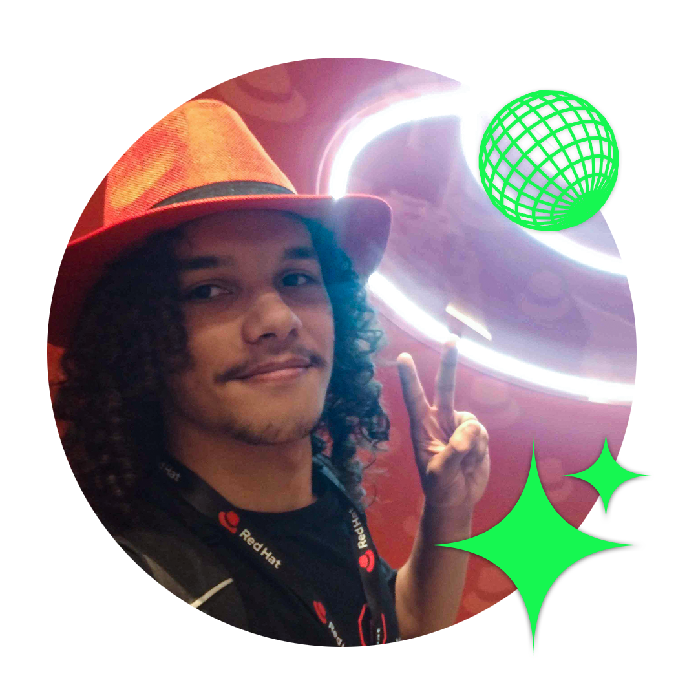
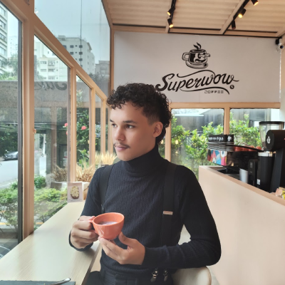

Apresentação
Conheça meu trabalho em vídeo
Escolha o idioma do vídeo e veja uma apresentação rápida sobre minha trajetória, minhas experiências e o que venho construindo.


Sobre mim
Sobre mim
Sou Diogo Antonny, desenvolvedor full-stack com mais de três anos no mercado de tecnologia e experiência criando soluções para o mercado financeiro.
Gosto de estudar com constância, transformar problemas em automações úteis e criar experiências que unem tecnologia, lógica e criatividade. Também estudo idiomas, crio jogos e tenho a música como uma das minhas fontes de inspiração.
Mercado financeiro
Soluções, dados e automações
Idiomas
Inglês avançado, japonês básico
Criatividade
Jogos, música e interfaces
Mentalidade
Estudo, melhoria contínua e entrega
Stack técnico
Habilidades
Tecnologias que uso para criar interfaces, APIs, automações, consultas, integrações e produtos web com foco em clareza e entrega.
Portfólio
Projetos
Uma seleção de projetos com foco em impacto, produto, experiência visual e entrega técnica.
Formação
Vida Acadêmica
Minha base acadêmica combina desenvolvimento de sistemas, formação full-stack e uma origem técnica em eletrônica.
Análise e Desenvolvimento de Sistemas
Faculdade ImpactaFormação que consolida minha base em engenharia de software, análise de requisitos, desenvolvimento web, banco de dados e construção de soluções escaláveis.
Trajetória
Experiências Profissionais
Minha trajetória junta desenvolvimento de software, dados, automações, liderança de produto e suporte técnico.
Atual
Estagiário de desenvolvimento de software
RB InvestimentosAtuo na área de desenvolvimento com queries SQL, agendamento de dados, análise de grandes volumes de informação e geração de relatórios. Também participo do desenvolvimento de aplicações web em MVC, .NET e C#, além de iniciativas de automação e inteligência artificial.
Ver empresa ↗Curiosidades
Games
Sou apaixonado por jogos desafiadores e sou um gamedev. Pretendo um dia publicar meus próprios jogos.
Línguas
Adoro estudar e falar outras línguas estrangeiras como inglês e mandarin. Tenho o sonho de explorar o mundo.

Música
Música faz parte da minha vida, gosto de ouvir e tocar. É algo que me inspira e me estimula.
Esportes
Adoro práticar esportes como skateboarding, calistenia e nadar. É algo indispensável na minha vida.